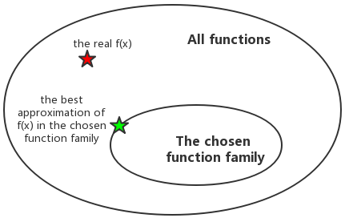
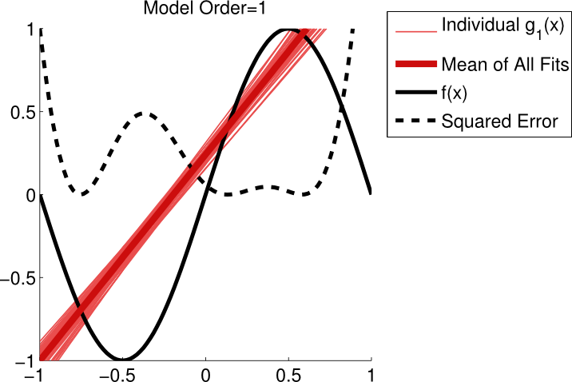
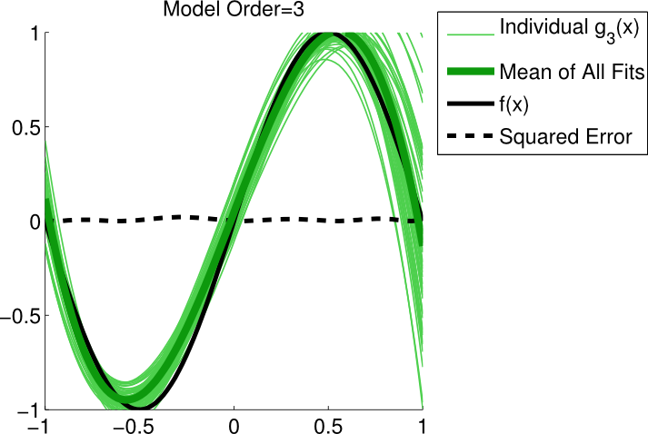
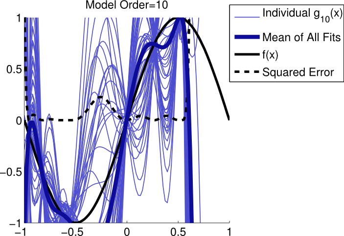

According to Alan Turing, a system, which probably looks pretty complicate, can be described with simple mathmatical equation. In machine learning domain, the models can be usually interpreted with equations, and the parameters of "equations" is what we want to learn. Usually, the parameter we finally get is an estimator of the real value. But how do we describe how good the estimator is?
Let's start with the Estimator.
The parameter is a quantity of a real model e.g. the mean or the variance of random variable, the parameter of a probability distribution, etc. An estimator, according to Wikipedia is a rule for calculating an estimate of parameter based on observed data. Because the estimator is calculated by a function of observed data, so the estimator is itself also random variable. (This concept is also the main idea of Bayesian Model in machine learning).
Suppose we want to know a paramter \(\theta\), which can be estimated by a sample set \(D_{S}\) drawn from \(X\). \(\hat{\theta}_S(X)\) is denoted as the estimator of \(\theta\) based on observed data of random variable \(X\). Let's denote \(x\) as a particular obseved data \(X=x\). Sampling is an approximation of the real world. So it could happen that for some reasons the sample set doesn't represent the real issuse very well. There are some important quantified properties which are helpful before we dive deeper.
For a given sample \(X=x\), the sampling deviation is denoted as:
\begin{equation} d(x) = \hat{\theta}_S(x)-E(\hat{\theta}_S(X)) = \hat{\theta}_S(x) - E(\hat{\theta}) \end{equation}where \(E(\hat{\theta})\) is the expected value of the estimator. As mentioned, the estimator is itself a random variable.
We randomly itteratively sample several times. Each time we give an estimate of θ. The bias then can be denoted as:
\begin{equation} Bias(\hat{\theta}) = E(\hat{\theta})-\theta = E(\hat(\theta)-\theta) =E(error) \end{equation}The distance btw. expected value of θ and the real theta being estimated. Bias can describe how far the average of estimates be off-target. We hope the estimator has a lower bias.
The expected value of the squared sampling deviation:
\begin{equation} Var(\hat{\theta}) = E[(\hat{\theta} - E[\hat{\theta}])^2] \end{equation}It describes how the estimator varies. SE is the square root of variance. We also hope the estimator has a lower variance.
The expected value of the squared error:
\begin{equation} MSE(\hat{\theta}) = E[(\hat{\theta}(X)-\theta)^2] \end{equation}The relationship mean squared error = variance + square of bias, namely \(MSE(\hat(\theta))=(Bias(\hat(\theta)))^2 + Var(\hat(\theta))\) can be proven easily. Just do remember the θ is also a random variable!
Proof:
\begin{align*} MSE(\hat(\theta)) &= E[(\hat{\theta}-\theta)^2] = E[\hat{\theta}^2] - 2E[\hat{\theta}]\theta +\theta^2 \\ Bias^2 &= (E[\hat{\theta}]-\theta)^2 = E^2[\hat{\theta}] +\theta^2 - 2E[\hat{\theta}]\theta \\ Var &= E[(\hat{\theta} - E[\hat{\theta}])^2] = E[\hat{\theta}^2] -2E^2[\hat{\theta}] + E^2[\hat{\theta}] = E[\hat{\theta}^2] -E^2[\hat{\theta}]\\ MSE &= Bias^2 +Var \end{align*}We can see that, for an unbiased estimator, the variance equals the mean square error.
Suppose there is a distribution with μ as the mean and σ as the variance. We will rarely know the true variance and mean. The best we can do is estimate them! In chapter 5 of Deep Learning, the author proves the unbiased estimators of mean and variance of Gaussian distribution \(X~N(\mu,\sigma^2)\).
There is another way to explain why the denominator divides the sum by N-1 rather than N. The following is what I quote from here, but edited to suit our case.
What we would really like is for the numerator to add up, in squared units, how far each observed value is from the unknown realization mean μ. But, we don't know the real mean μ, so we estimate it with the average value. Doing so costs us one degree of freedom. That is, we have to divide by N-1, and not N, because we estimated the unknown real mean μ.
What's the variance of the unbiased sample mean \(var(\hat{\mu})\). It turns out that:
\begin{equation} var(\hat{\mu}) =\frac{\sigma}{N} \end{equation}If N goes large enough, variance tends to be zero.
Notice that the square root of unbiased sample variance is however biased from the real standard error σ. As long as N is large enough, it will still approximate real σ very well.
With SE and central limit theorem we can find that the average value as mean estimator will tend to obey Gaussian distribution. So we can use SE to find the confidential interval. If we have two machine learning algorithm, we can find the upper bounds of \(95%\) confidential intervals, of course the algorithm with lower upper bound wins(the interval is more narrow)!!
Since I already mention the degree of freedom DF, see more about DF in the following chapter.
What hint can we get from bias and variance of estimator when doing model fitting? Suppose we have a model \(f(x)\) in the real world, due to the noise we get caught into the delimma that we never observe the real \(f(x)\) given an \(x\), but the noisy data \(y=f(x)+\epsilon\). Following the workflow of regression we should first of all find a function family to fit the model. suppose we come up with polynomial \(p_N(x)=a_0+a_1x+ a_2x^2+...+a_Nx^N\). Training, testing… How good performance will we finally get?
To find out the real model precisely is difficult, two main probelems exist as the following figure shows.

How do we assess the prediction performance? So suppose we finally choose \(p(x)\) as the prediction function. Noted that the prediction function is based on the data, so the prediction function is random variable. If we repeatedly and independently sample data several times, we get different \(g(x)\). The expected value of \(p(x)\) is \(E[p(x)]\). There are some parameters to be introduced:
Fed with these concepts, we can actually compare them with the former chapter on estimator bias and variance and MSE. Try to replace θ with y, \(\hat{\theta}\) with \(p(x)\), and \(E[\hat{\theta}]\) with \(E[p(x)]\), then you can find the relationship.
Let's explore the underlying relationship. A given observed \((x^*,y^*)\) pair is drawn due to \(y^*=f(x^*) + \epsilon\). For a given set of pbserved data pairs, the expected prediction error is \(E[(p(x^*)-y^*)^2]\). We expand it as:
\begin{align*} E[(p(x^*)-y^*)^2] &= E[p^2(x^*)] - 2E[p(x^*)y^*] + E[{y^*}^2] \\ &= E[p^2(x^*)] - 2E[p(x^*)]f(x^*) + E[{y^*}^2] \end{align*}Since:
\begin{align*} E[p^2(x^*)] &= E[(p(x^*) - E[(p(x^*)])^2] +E^2[p(x^*)] \\ E[{y^*}^2] &= E[(y*-E[y^*])^2] +E^2[y^*] = E[(y*-f(x^*))^2] +f^2(x^*) \end{align*}So finally we can form the expected prediction error as:
\begin{align*} E[(p(x^*)-y^*)^2] &= E[(p(x^*) - E[(p(x^*)])^2] +E^2[p(x^*] - 2E[p(x^*)]f(x^*) + E[(y^*-f(x^*))^2] +f^2(x^*)\\ &= E[(p(x^*) - E[(p(x^*)])^2] + E[(y^*-f(x^*))^2] + E^2[p(x^*] -2E[p(x^*)]f(x^*)+f^2(x^*)\\ &= E[(p(x^*) - E[(p(x^*)])^2] + E[(y^*-f(x^*))^2] + (E[p(x^*)]-f(x^*))^2 \end{align*}expected prediction error = variance of the estimator + noise + square of bias of the estimator
Notice that whatever effort we make, we can't eliminate the noise term of the error.
You may heard of the term "lack-of-fit sum of squares". There exists a relationship that the residual sum of squares can be decomposed into two components: lack-of-fit sum of squares and sum of squares of the differences between each observed $y$-value and the average of all y-values corresponding to the same $x$-value.
If you compare it carefully with the relationship mentioned above, you can find that the lack-of-fit dependens on the bias estimator and the noise. As said before, the noise is our delimma, however we do can improve our learning algorithm to minimize the bias estimator. Also I quote some figures to intuitively explain the variance estimator and bias estimator.
The following figures are cited from Model Selection: Underfitting, Overfitting, and the Bias-Variance Tradeoff



The real model is \(f(x)=sin(\pi x)\) The real world with noise is \(y= f(x)+ N(0,\sigma^2)\) Using the polynomials with \(N=1\), \(N=3\), and \(N=10\) seperately fit the observed data. The data are independently sampled 50 times and for each \(N\) there are 50 prediction functions. The first figure shows us that the model can't capture the real features of the data. It is sensible neither to the real model nor to the noise. So we can see that the variance of those 50 lines is low. But the bias is high. So this is a typical case of underfitting. The third figure in the contrast, capture the real features and and also the noise we don't want. It is sensible not only to the real model but also to the noise. This time, however, we can see that the variance of those 50 lines is low. That's because it regards the noise as a feature, this is a typical case of overfitting. The best is the second figure. As we can see, it has relative lower bias and lower variance. The noise doesn't misguide our model.
So the trade-off is actually very parently. If we use a complex model with too much parameters, the model works well on the training data to lower the residules down. However, it may work very bad on test data, cause the model we get represents not only the real model but also the noise. It's not generalized. The bias may be very low but the variance goes too high. If the model is too simple, with not enough parameters, it probably doesn't capture the real features of the real model. So the bias may be very high in spite of lower variance.
Well, suppose the real model is \(f(x) = b_0+b_1x\), and the prediction function we get based on the data points drawn from \(y=f(x)+\mathbb{N}(0,\sigma^2)\) is \(\hat{y}=\beta_0+\beta_1x=\). Suppose the noise is normally distributed and at each single value of \(x\) we have the same σ without drift. There are 3 concepts.
Now we can estimate \(\sigma^2\) in two ways.
So far, you might find the relationship btw. the two items and SSTO, SSE. There are actually another thing should be mentioned.
It turns out that:
\begin{align*} E[MSR] &= \sigma^2 +b_1^2\sum_{i=1}^{N} (X_i-X_{ave})^2 \\ E[MSE] &=\sigma^2 \end{align*}the reference Test if the feature is correlated to the respond y There are two alternative methods for testing whether a linear association exists between the predictor x and the response y in a simple linear regression model, y=b0+b1x +ε
\begin{equation} H_0: b_1=0 vs. H_1: b_1 \neq 0 \end{equation}\(r^2\) is alsp called coefficient of determination or r-squared value.
\begin{equation} r^2 = \frac{SSR}{SSTO} = 1-\frac{SSE}{SSTO} \, \in[0,1] \end{equation}Interpretation:
According to the expected value of MSE and MSR, we can test \(H_0\) versus \(H_1\)
If \(b_1\), then we'd expect the ratio MSR/MSE to equal 1. If \(b_1 \neq 0\), then we'd expect the ratio MSR/MSE to be greater than 1.
According to the WorkFlow, we can write down the test statistics as \(F^*=\frac{MSR}{MSE}\).
At last using P-value, significant level, and F-distribution to test if we should reject \(H_0\)
Firstly, specify the null \(H_0\) and alternative hypotheses \(H_1\) or \(H_A\).
Secondly, calculate the value of the test statistic according to the methode you use.
At last, use the resulting test statistic to calculate the P-value.
The p-value is a measure of the strength of the evidence and even extremer eveidence against the null hypothesis. It means that, if \(H_0\) is true, how likely will the observed value and even greater value appear.
By the way, the test statistic could be t-statistic, representing t-test, and F-statistic, representing F-test. These two methode are common used.
Once again, I list these concepts together.
Given a set of pairs \((x_i,y_i)\) (N pairs), figure out if there is linear association btw. \(y\) and \(x\) (if \(\beta_1 = 0\)). \(y_ave\) is the average of all \(y_i\), represents a line with no slope in \(x-y\) plane, it supports \(H_0\). \(\hat{y_i}\) is the predicted value, it supports \(H_1\). We have SSTO = SSE+SSR.
If SSR is large, it suggests that a linear association btw. \(x\) and \(y\)
For every single \(x\), we have: expected prediction error = variance of the estimator + square of bias of the estimator + noise
\begin{align*} E[(p(x^*)-y^*)^2] =& E[(p(x^*) - E[p(x^*)])^2] + \\ & E[(y^*-f(x^*))^2] + (E[p(x^*)]-f(x^*))^2 \end{align*}We can write it with similar notation as SSTO, SSE, SSR.
\begin{align*} E[(\hat{u_i}-y_i)^2] =& E[(\hat{y_i} - E[\hat{y_i}])^2] + \\ & E[(y_i-f(x_i))^2] + (E[\hat{y_i}]-f(x_i))^2 \end{align*}, where \(f(x_i)\) is the response according to the real underlying model \(f\)